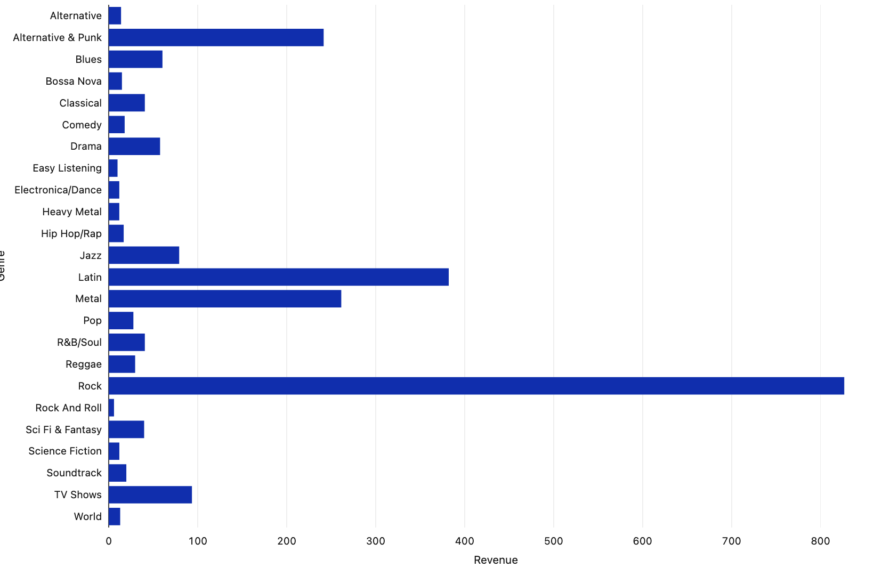

Case Study | Chinook Dimensional Model
Transforming Chinook sales data through Raw, Clean, and Mart layers into analytics-ready tables for sales reporting and business insight.
Project Overview
This project designs and implements a dimensional data warehouse for the Chinook music-store dataset. Source CSV data is loaded into a Raw layer, standardized and validated in a Clean layer, and published as a curated Mart layer for analysis.
The model turns operational sales records into a consistent structure that makes revenue, customer, track, genre, employee, and time analysis easier to perform.
Business or Analytical Question
How can sales data be modeled to help answer questions such as:
- Which tracks, genres, and artists drive sales?
- How does revenue change over time?
- Which customers and regions contribute most to sales?
- How do employee territories and support assignments relate to performance?
Architecture Diagram
The pipeline follows a medallion-style progression from source data to business-ready marts, with validation and analytics scripts orchestrated through Databricks Jobs.
Source Chinook CSV data
Standardize and validate
Fact + dimensions
Sales reporting and insights

Your Role and Collaboration
This project was developed collaboratively as Group D3, combining my dimensional-modeling work with shared Databricks SQL development, architecture planning, and reviewable GitHub documentation.
The solo repository presents my implementation and documentation, while the collaborative repository captures the wider team workflow and shared project context.
Tools and Technologies
Data Model and Quality Approach
The Mart layer uses a star schema centered on fact_sales. Each fact row
represents one invoice line, or one purchased track on a specific invoice.
Fact table
Sales measures include quantity, unit price, and line amount.
Dimensions
Customer, track, employee, and date context support flexible reporting.
Validation
Clean-layer checks help protect data types, keys, relationships, and reporting consistency.
Key Outputs or Findings
- A sales-ready Mart layer for reporting and business analysis.
- A star schema connecting sales to customer, track, employee, and date context.
- Reusable measures for quantity, price, revenue, and line-level sales.
- A scheduled sequence for Raw, Clean, Mart, validation, and analytics scripts.
Example Analysis
With the Mart model in place, analysts can compare revenue trends, customer behavior, track popularity, genre preferences, and time-based sales performance without rebuilding the source-data joins for every question.

Explore the model, architecture, and Databricks SQL workflow:
View Chinook GitHub Repository View Collaborative Repository